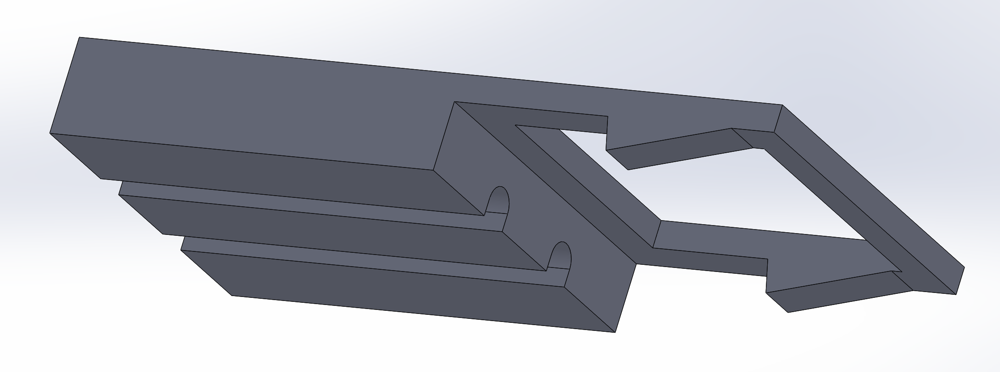
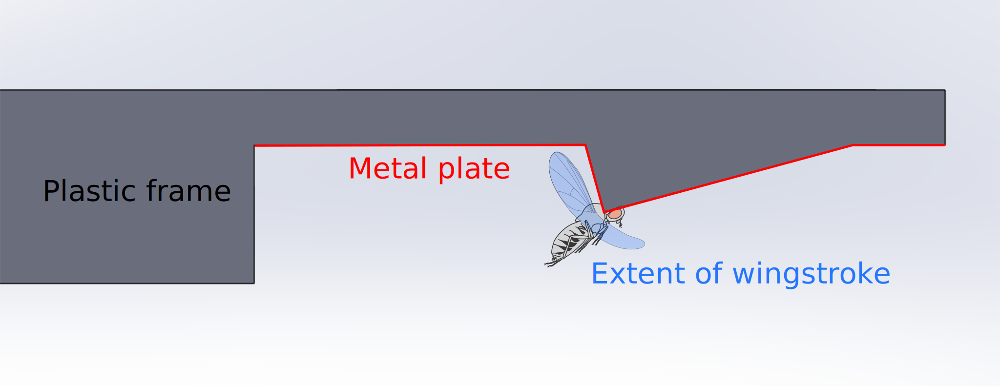

Introduction
This website contains supplemental information to Anatomical reconstruction and functional imaging reveal an ordered array of skylight polarization detectors in Drosophila that will appear in the Journal of Neuroscience in 2016. Below we describe a method for fabricating holders that can be used to hold a fly for electrophysiological or imaging experiments while permitting the fly to flap its wings or move its legs for behavioral tasks. The original holders for doing electrophysiology on tethered flying Drosophila were described in Active flight increases the gain of visual motion processing in Drosophila. Our aim was to develop a fabrication method simpler than that initial approach that could be reproduced by a larger number of laboratories.
The basic idea with this design is to separate the construction of the metal plate that holds the fly (which requires tight tolerances because it needs to be just the right size for the head but not so thick that you cannot dissect through it) from the construction of the larger plastic frame that is used to mount the fly under the microscope. This separation is accomplished by creating two separate parts that are later glued together:
• The metal plate is etched out of thin steel stock along with some guides that allow it to be folded precisely at the location of the hole.
• The plastic frame can be printed on a standard 3D printer.
Making the plastic frame
The solidworks file for the plastic frame can be downloaded here, and STL file for the plastic frame (which is less easily modified, but can be used immediately with a 3D printer can be downloaded here. Most 3D printers should be capable of printing this part. Alternatively, we have uploaded the model to Shapeways, where you can order it in a variety of materials:
It is also possible to order them from Quickparts or other rapid prototyping services.
This is a 3D rendering of the plastic frame:View of the plastic frame from the top:
 View of the plastic frame from the bottom:
View of the plastic frame from the bottom: View of the plastic frame from the back:
We insert magnets into the holes in the back of the frame to hold it in place during an experiment. Magnets sized 1" X 1/8" X 1/8" and magnetized through the short axis work well, like part #BX022 from K&J Magnetics. (Pro-tip: if you allow the magnets to rotate in place, multiple holders can be snapped together for easy transport.)
Making the metal plate
Order the etched metal from Fotofab using these parts (either one should work): file1, file2. These .dxf files contain the design for the etched metal. Note that in this design we actually had them print three holders in one "part". They can be cut apart with scissors. We tried three different sizes for the hole, and both the smallest and middle sizes worked. The larger hole is useful for mounting the thorax. The metal that we used was 0.001" Stainless Steel, type 316 soft annealed (McMaster-Carr sells the material as shim stock, part #2317K11). The outer dimensions of the part are 3.07 x 1.07 inches.
Cut the individual pieces out from the sheet and apart from one another:Fold each (approximately square) plate using the slits as guides. Crease the folds, then partially unfold to match the contour of the plastic frame.
Final product
Glue the folded metal plate to the bottom of the plastic frame. You can use epoxy or some other glue that adheres to metal and plastic. Make sure there is a good seal, or saline will leak out. If you intend to track wingstrokes, the metal needs to be painted to reduce reflections. Blackboard paint works well to reduce reflections, but it does not adhere very well to the metal, so it helps to prime the metal with model paint.
 The final product should look something like this:Note that the fly has clearance to flap its wings both on the ventral side,
 and on the dorsal side.
and on the dorsal side.Below is a magnified image of a partially dissected fly (apologies for the blurry photograph and bubbles).
Troubleshooting
If you are having difficulting positioning the fly on the holder, you can mold the metal plate even after it is glued to the plastic frame by pushing it with an old set of forceps.
If saline is leaking out of the holder, add glue to the metal-plastic seam. The slits are a common source of leaks.
Referencing this work
This method for constructing fly holders was first published as online supplemental information associated with Weir et al. (2016) Anatomical reconstruction and functional imaging reveal an ordered array of skylight polarization detectors in Drosophila. Please cite that paper if you use this design. Steve Safarik and Bettina Schnell both contributed to the design.